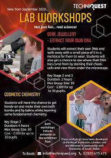
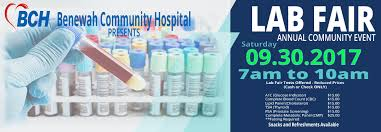
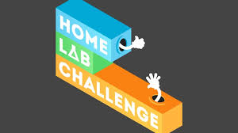

🌟 الأوائل
نحن فخورون بإعلان قائمة الطلاب المتميزين في معهد التحاليل المخبرية:
أحمد يوسف
📚 المركز الأول - إنتاج مخبري
ليلى عبدالله
📚 المركز الثاني - علم الأحياء
خالد علي
📚 المركز الثالث - تحليل مخبري
الفعاليات والأنشطة
نحن ننظم مجموعة واسعة من الأنشطة الأكاديمية والرياضية التي تساعد في تعزيز مهارات الطلاب وتشجيع الإبداع والابتكار. إليكم بعض الفعاليات الرئيسية:

ورشة عمل مخبرية
ورشة عمل عملية تركز على تقنيات التحليل المخبري واستخدام الأجهزة الحديثة.
اعرف المزيد

مسابقة بحثية
مسابقة مثيرة يقدم فيها الطلاب مشاريعهم البحثية ومهاراتهم العلمية.
اعرف المزيد

ندوة علمية
ندوة تناقش أحدث التطورات في العلوم المخبرية، بما في ذلك التقنيات الجديدة والأبحاث الحديثة.
اعرف المزيد

مهرجان رياضي
مهرجان حيوي يشارك فيه الطلاب في مختلف الأنشطة الرياضية والمسابقات الجماعية.
اعرف المزيد

معرض مخبري
معرض يعرض مشاريع الطلاب المخبرية وإنجازاتهم.
اعرف المزيد

تحدي مخبري
تحدي مثير يتنافس فيه الفرق في إنشاء محتوى مخبري يمكنه إنجاز مهام متنوعة.
اعرف المزيد
ورشة عمل مخبرية
تم تصميم ورشة العمل المخبرية للمبتدئين والمتوسطين. تغطي الأساسيات في التحليل المخبري واستخدام الأجهزة الحديثة.
المواضيع المغطاة:
- مقدمة في التحليل المخبري
- تقنيات التحليل
- أساسيات الأجهزة المخبرية
- سرد القصص في التحليل المخبري
- أدوات التحليل الأساسية
من يجب أن يحضر:
هذه الورشة مثالية للطلاب الذين يرغبون في بدء رحلتهم المخبرية أو تحسين مهاراتهم الحالية.
اقرأ المزيد على ويكيبيديا
مسابقة بحثية
تتيح هذه المسابقة للطلاب تقديم حلول بحثية لمشاكل العالم الحقيقي. تعمل الفرق معاً لتطوير مشاريع بحثية تهدف إلى تحقيق تأثير في مختلف القطاعات.
هيكل الحدث:
- تسجيل الفرق
- جولة عرض الأفكار
- تطوير المشروع
- العرض النهائي أمام الحكام
الجوائز:
سيتم منح جوائز لأفضل ثلاثة فرق بناءً على الابتكار والجدوى وجودة العرض.
اقرأ المزيد على ويكيبيديا
ندوة علمية
في هذه الندوة، يناقش الطلاب والمحاضرون أحدث التطورات في العلوم المخبرية، بما في ذلك التقنيات الجديدة والأبحاث الحديثة.
المتحدثون الرئيسيون:
ندعو خبراء الصناعة والأكاديميين لمشاركة رؤاهم ونتائج أبحاثهم.
المواضيع المناقشة:
- استراتيجيات التحليل المخبري
- تقنيات التحليل الجديدة
- تحليل البيانات المخبرية
- تطبيقات العلوم المخبرية في الصناعة
اقرأ المزيد على ويكيبيديا
مهرجان رياضي
المهرجان الرياضي حدث سنوي يشارك فيه الطلاب في مجموعة متنوعة من الأنشطة الرياضية بما في ذلك كرة القدم وكرة السلة وسباقات التتابع. يعزز الحدث العمل الجماعي والمنافسة الصحية.
الأنشطة المشمولة:
- مباريات كرة القدم
- بطولات كرة السلة
- سباقات التتابع
- سباقات التسلية والتحديات
المشاركة:
يُشجع جميع الطلاب على المشاركة، سواء كانوا رياضيين أو مشجعين.
اقرأ المزيد على ويكيبيديا
معرض مخبري
في المعرض المخبري، يعرض الطلاب مشاريعهم المخبرية في مجالات مثل التحليل المخبري وعلوم الحياة. يشجع الحدث على الاستفسار المخبري والابتكار.
تفاصيل المعرض:
سيقدم الطلاب مشاريعهم للحكام وزملائهم، مشرحين وسائطهم ونتائجهم.
الفئات:
- مشاريع التحليل المخبري
- مشاريع علوم الحياء
- تحليل البيانات المخبرية
- تطبيقات العلوم المخبرية
اقرأ المزيد على ويكيبيديا
تحدي مخبري
يختبر تحدي المخبرات قدرة الطلاب على إنشاء محتوى مخبري يمكنه إنجاز مهام متنوعة. يعزز التحدي الإبداع وحل المشكلات في إنتاج المخبرات.
تنسيق التحدي:
ستتنافس الفرق في مهام متعددة تختبر قدرات محتوى المخبرات في السرعة والدقة والوظيفة.
معايير التقييم:
- الإبداع والابتكار
- الأداء والوظيفة
- العمل الجماعي والتعاون
اقرأ المزيد على ويكيبيديا